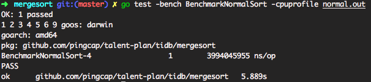
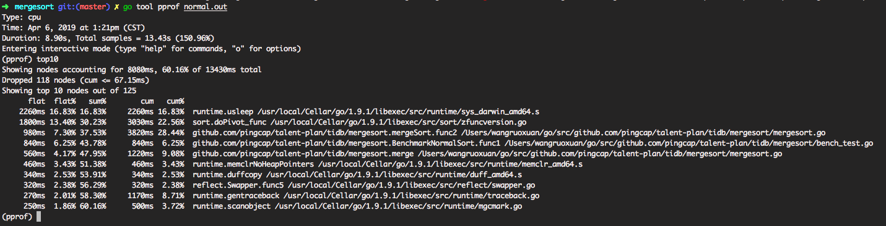
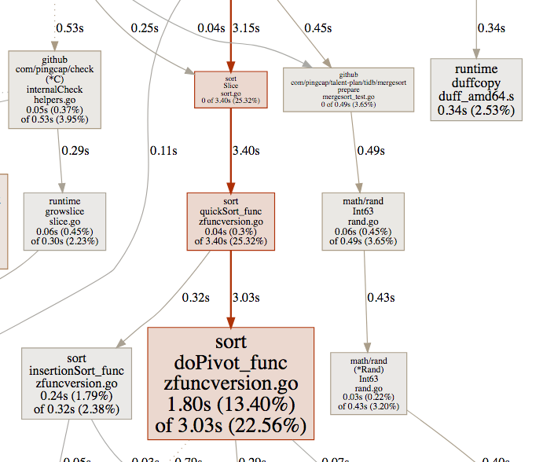
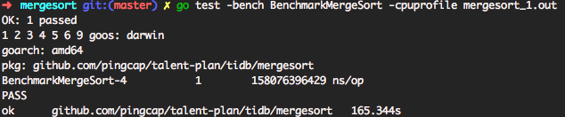
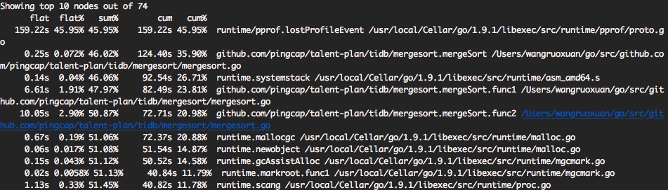
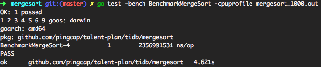

Go Profiling and Optimization
go有着强大的runtime profiling工具，例如pprof
go test . -bench . -cpuprofile prof.cpu, 然后使用go tool pprof prof.cpu 进行分析uber/go-torch: 根据Go's pprof的结果，构造输出火焰图 go test -bench BenchmarkMergeSort -benchmem -cpuprofile mergesort_10000000.out -memprofile mergesort.mem: 构造cpu profile和内存profilego tool pprof -alloc_objects xxx.test prof.mem: 分析内存alloc的地方go tool pprof xxx.test prof.cpu: 分析cpu profilelist malloc: 查看malloc以及gc的耗时情况，list system`查看系统调用goroutine切换的情况.最近在做pingcap的talent-plan，实验一即是编写并行的merge_sort，要求比单线程quick_sort性能更优，输入数据为16m个int64的数据，并进行profile
首先第一版并没有对merge_sort进行并行度的区分，开启了过多的goroutine，在时间上非常耗时。明显比普通内置sort要慢很多。当然这边也要注意一点，内置的排序也是经过优化的，也混合排序策略的优化，具体策略这边不细说，可以参考golang源码实现 。
两种优化策略主要思想一致即，如何充分利用多核优势
总耗时如下图：可以看到总耗时5.88s。

使用如下命令: go test -bench BenchmarkNormalSort -cpuprofile normal.out 进行cpu profile。

输出成svg图截取部分如下, 很直观明了的看到golang内置的sort排序，主要cpu消耗在快排的关键Pivot函数上面，一切是符合预期的，当然标准库一般没什么问题。

总耗时如下图，可以看到总耗时异常的高165s。

仅pprof分析，由下图可以看到各个入口的累计耗时都要比内置sort高很多，更直观的输出svg也可以看到结果

svg图不便展示，可以看到主要耗时由两部分：runtime mallocgc 72s，runtime system stack 92s, 主要原因是16M（2^24）个数据，会开启个1+2+4+ ... + 个即 - 1个线程，也会造成频繁的gc。虽说goroutine非常高效但是如此庞大数量的goroutine， 势必会导致过度的系统调用和gc，并不能充分利用多核优势，程序的消耗主要浪费在了线程调度，goroutine调度上面，因此程序设计不合理, 也可以通过pprof工具list malloc以及list sys得到验证。
定义最优解：使用之前介绍的混合排序优化，在机器：4c8g/darwin的配置下， 的数据量下求的最优的K使得排序耗时最短。
首先在开始求最优解之前，我们先设置K=1000进行验证，耗时4.62s，目前已经可以说明问题了，使用混合排序优化已经有了很大的提升。
结合svg图, 可以看到系统用于runtime mallocgc 1.52s runtime system stack 1.56s有明显的下降，且使用了内置sort, sort doPiovt_func 0.93s。

求最优解思路：K从特定的start开始设置不同的step步长，计算每次的特定的K下的耗时，总的耗时曲线应该是先减后增，最优解即为波谷。
具体实现如下：
xxxxxxxxxxfunc FindOptimalK(start, step int) int { numElements := 16 << 20 src := make([]int64, numElements) original := make([]int64, numElements) prepare(original) min := 163 * time.Second res:=start for k := start; k < numElements; k += step { st := time.Now() Thresh = k // 更新K copy(src, original) MergeSort(src) cost := time.Now().Sub(st) fmt.Printf("%d cost: %.2fs\n", Thresh, cost.Seconds()) if cost < min { min = cost res = k //选取波谷的位置即为最优解 } else { } } return res}结果如下：
xxxxxxxxxx1000 cost: 2.35s101000 cost: 1.68s201000 cost: 1.65s301000 cost: 1.58s401000 cost: 1.58s501000 cost: 1.53s601000 cost: 1.59s701000 cost: 1.53s801000 cost: 1.58s901000 cost: 1.57s1001000 cost: 1.61s1101000 cost: 1.64s1201000 cost: 1.55s1301000 cost: 1.59s1401000 cost: 1.56s1501000 cost: 1.61s1601000 cost: 1.67s1701000 cost: 1.63s1801000 cost: 1.62s1901000 cost: 1.52s2001000 cost: 1.63s1001000 cost: 1.65s2001000 cost: 1.74s3001000 cost: 1.58s4001000 cost: 1.57s5001000 cost: 1.65s6001000 cost: 1.61s7001000 cost: 1.55s8001000 cost: 1.62s9001000 cost: 2.07s10001000 cost: 2.05s11001000 cost: 2.04s12001000 cost: 2.04s13001000 cost: 2.05s14001000 cost: 2.06s15001000 cost: 2.05s16001000 cost: 2.18sResult: 7001000--- PASS: TestFindOptimalK (32.49s)PASS
理想很美好，由于线程调度，等一些随机性的原因，最优解K很难找到，不过可以暂时认定一个阈值，在当前数量级上面，10w~1000w的k都能获得非常不错的性能。从svg图上面可以看到对比k=100000.svg,k=10000000.svg。
Uber Prashant V大神的建议
runtime.convI2E通常意味着allocs/time{kind=link}
{kind=link}
{kind=link}
{kind=link}